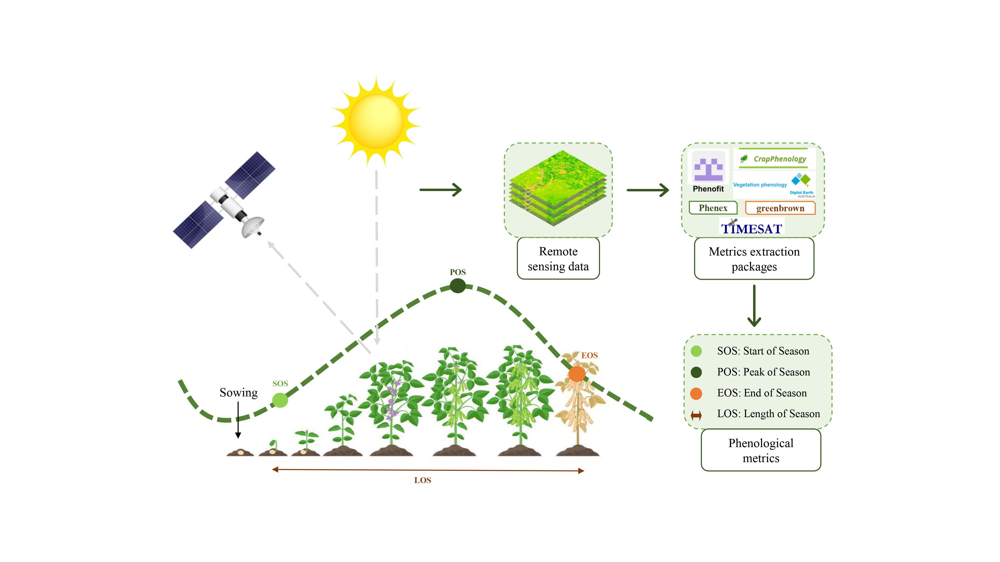
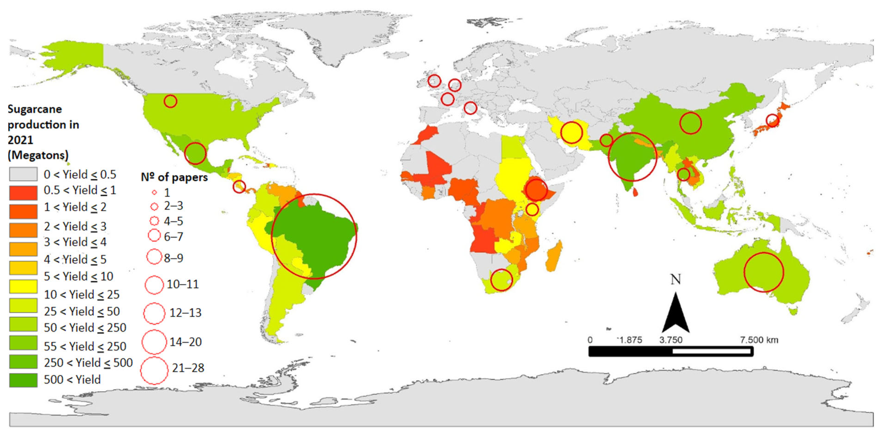
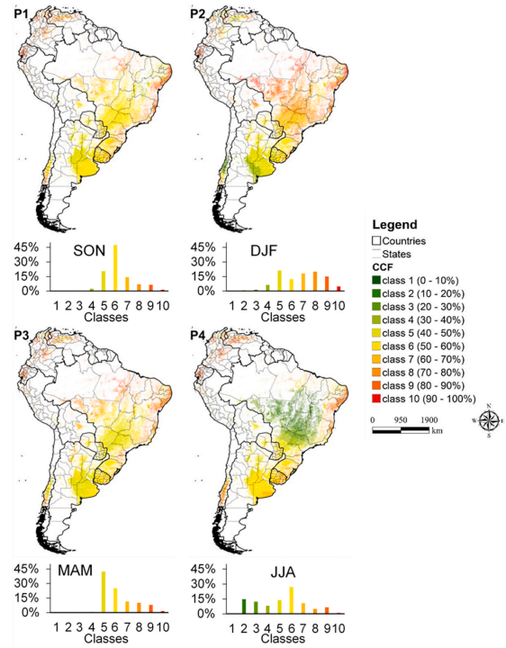
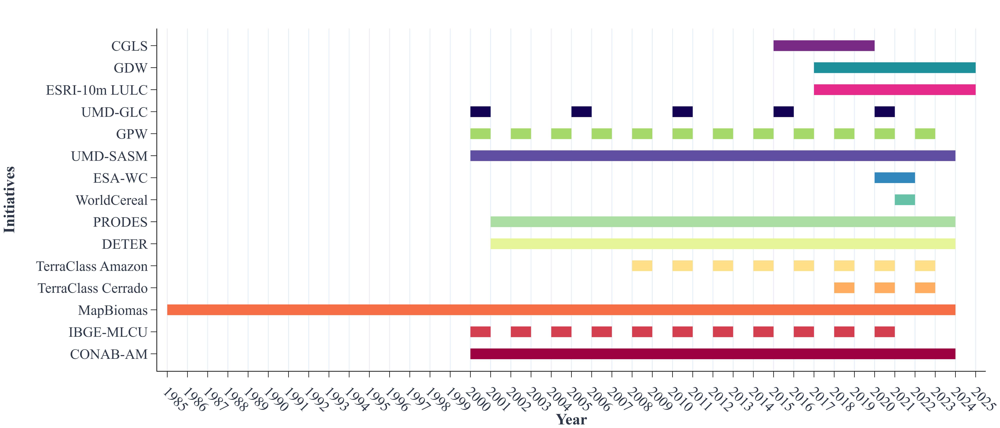
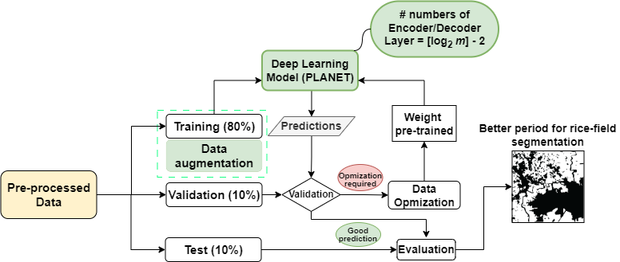

Feed

Sugarcane Yield Estimation Using Satellite Remote Sensing Data in Empirical or Mechanistic Modeling: A Systematic Review.

Limitations of cloud cover for optical remote sensing of agricultural areas across South America.

Land Use and Land Cover Products for Agricultural Mapping Applications in Brazil: Challenges and Limitations

A Method for Estimating Soybean Sowing, Beginning Seed, and Harvesting Dates in Brazil Using NDVI-MODIS Data
